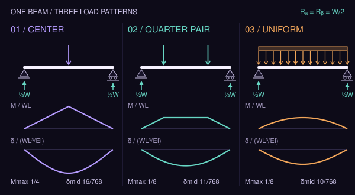

SAME
REACTIONS
Same forces at the supports. Different bend.
Held fixedOne simply supported beam · length L · stiffness EI · total downward load W · load centroid L/2.

Static plate · three load patterns · fixed support reactions
Selected loadUniform load referenceAxes remain fixed across cases
Read the study
A support scale measures what the entire load does to the beam as a whole. The beam's interior answers a finer question: where that load enters and how its effects accumulate along the span.
What the supports know
For each pattern, the downward loads sum to W and their first moment about the left support is WL/2. Vertical equilibrium gives RA + RB = W. Moment equilibrium gives RBL = WL/2. Thus both reactions equal W/2, exactly, in this ideal model.
These are three statically equivalent external loadings. Their matching resultants and reactions say nothing by themselves about the entire internal moment or deflected shape.
Three authored arrangements
Center point: W at x = L/2. Symmetric pair: W/2 at x = a and x = L − a; the initial setting is a = L/4. Uniform: q = W/L throughout 0 ≤ x ≤ L. The paired slider spans 0.10 ≤ a/L ≤ 0.50. At the right endpoint, the two idealized half-loads coincide and reproduce the center point.
The total load, beam length, supports, material stiffness and units are held fixed between cases. The drawings of concentrated forces use arrows, not finite-width pressure patches.
The interior calculation
Let u = x/L and m(u) = M(x)/(WL). With downward deflection d(u) = δ(x)/(WL³/EI), the small-deflection Euler–Bernoulli relation is d″(u) = −m(u) in the sign convention used here, with d(0) = d(1) = 0.
For a point load with fraction p of W at fraction v of L, write (u − v)+ = max(0, u − v). Each curve uses m(u) = u/2 − Σ p(u − v)+ − q̄u²/2, where the normalized load rate q̄ = qL/W is 1 for the uniform case and 0 for the point-load cases. The displayed d(u) is the twice-integrated curve with both support boundary conditions enforced. The plots use those formulas directly; they do not step a numerical beam solver.
The matching peak, the differing bend
In normalized units, the center point has maximum m = 1/4 and midspan d = 1/48 = 16/768. For the pair, maximum m = (a/L)/2 and midspan d = (a/L)[3 − 4(a/L)²]/48. Uniform loading has maximum m = 1/8 and midspan d = 5/384 = 10/768.
At a/L = 1/4, the pair's moment has a plateau at 1/8 from L/4 to 3L/4. The uniform curve reaches 1/8 only at midspan. Both maxima agree, while their midspan deflections are 11/768 and 10/768. The pair's deflection is 10% larger here.
Reading the fixed axes
Each moment plot uses 0 to 1/4 in units of WL. Each downward deflection plot uses 0 to 1/48 in units of WL³/EI. The x coordinate always spans the same u ∈ [0, 1]. The dashed uniform reference keeps the same axes. Its line disappears when uniform itself is selected.
The axis ranges fit all three cases and every paired slider setting. Filled moment area is the actual normalized moment diagram; the deflection curve is plotted on its separately labeled normalized axis, not as a true-scale deformed beam silhouette.
Boundary of the claim
The model assumes static loading; ideal pin and roller supports; a prismatic linear elastic beam of constant EI; small deflection; and no shear deflection, self-weight, load spread, or support settlement. W and EI are positive. It does not compare failure capacities, design adequacy, or real-world load-path safety. All exact fractions refer to this stated model; SVG coordinates are rounded for drawing.
Reproducible checkpoints
| Pattern | Load first moment / (WL) | RA / W | RB / W | Peak M / (WL) | δ(L/2) / (WL³/EI) |
|---|---|---|---|---|---|
| Center point | 1/2 | 1/2 | 1/2 | 1/4 | 1/48 |
| Quarter pair | 1/2 | 1/2 | 1/2 | 1/8 | 11/768 |
| Uniform | 1/2 | 1/2 | 1/2 | 1/8 | 5/384 |